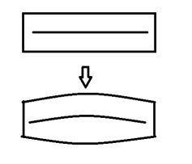

Basic svg example. Lets try to do the samee stuff using canvas.
See the Pen svg basic example by ilya (@ilyabasiuk) on CodePen.
As you can see we have the same problems with animation. So that it is not svg problem. But why we have no problem with animation of vehicles shape? The answer is - because we have no thin vertical or horizontal lines and text there. Lets try make our lines not so vertical.
See the Pen canvas realization of moving labels by ilya (@ilyabasiuk) on CodePen.
Or lets try to apply scew transforamtion.
See the Pen svg rotated by ilya (@ilyabasiuk) on CodePen.
The results of 2 last demos are preety similar: less quaking, but text is more blurred. Also it enough noticable that label is not horisontal. Ok lets try to draw horisontal label with non straight lines and text. Like on the image below: 
See the Pen svg rotated by ilya (@ilyabasiuk) on CodePen.
Looks better, but we also can change a font a little.
See the Pen new rect by ilya (@ilyabasiuk) on CodePen.
What do you think about the last demo? Also It worth to do perfomance test, because I don't how could it influence on perfomance.
See the Pen new rect by ilya (@ilyabasiuk) on CodePen.